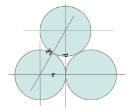
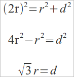
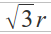
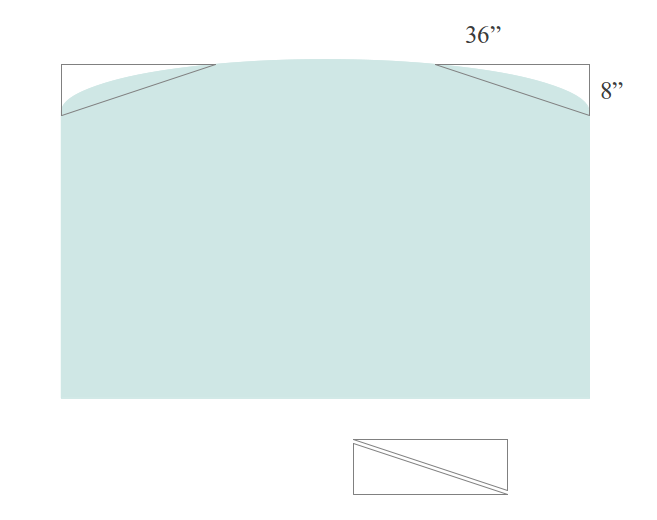
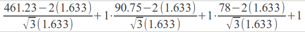
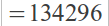

When balls are stacked, then don't sit one on the other. They settle down to sit "between" each other. This needs to be taken into consideration when determining the dimensions that each ball will take up.


So each row of balls takes up  distance with an additional 2r from the outside balls on either end. If we determine the dimensions on the bus in terms of ball radii we can determine the number of balls that can fit in the bus with the formula:

One nice element of this formula is that it should work for any size of ball and any container if you substitute in the correct radius and dimension.
Radius of a ping-pong ball: 40 mm (International Table Tennis Federation)
40mm = 4 cm
2.54 cm = 1"
4cm / 2.54 = 1.633"
Dimensions of 77 passenger bus: (Blue Bird All American Rear Engine)
Length: 245" + 94.48" + 121.75" = 461.23"
Width: 90.75"
Height: 78"
We also need to consider that the top is not a straight line it is a curve. I approximated the lost space as a tirangular prism. Using a picture of the bus and the known dimentions I determined the dimensions to be:

Length = 461.23"
Width = 36"
Height = 8"
I apply the same equation to these dimensions as I do to the dimensions of the bus, but take the value away from the total. With the values in the equation:



| |
Liquid Layout
With the popularization of mobile devices, and various different home devices for consuming internet content the need for resizable internet content is more important than ever. As technology becomes more integrated into our lives there will be more need for portability of content. From internet enabled windows, to the possibility of mobile HUD for daily life. Liquid displays are needed. Since Java is not guarantee to be enabled and CSS3 is coming out it is best done without code and done with web markup.
Plates Program
Need to make plates for a population?
Here is a program written in Java that will tell you the best way to do it. It'll run right in your browser!
On this page the program is described, and the rational for making it is clearly outlined.
|
.